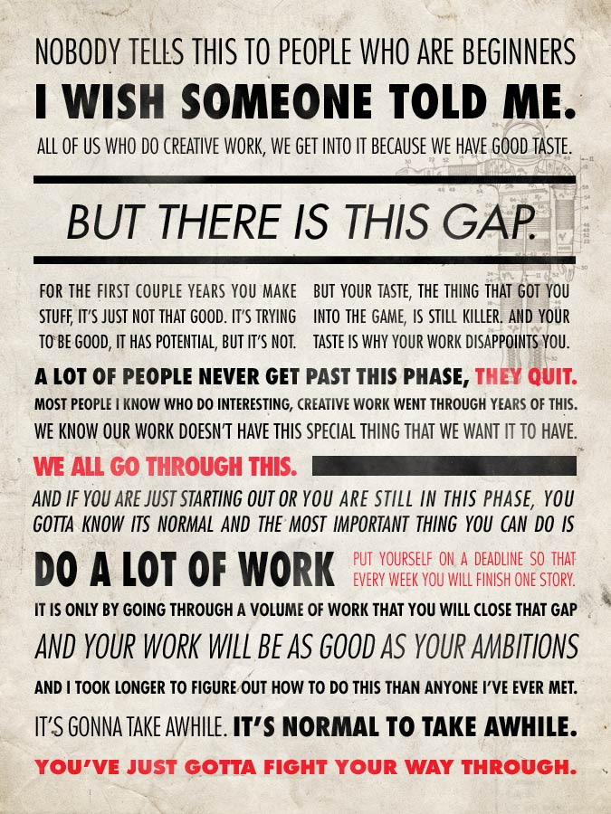
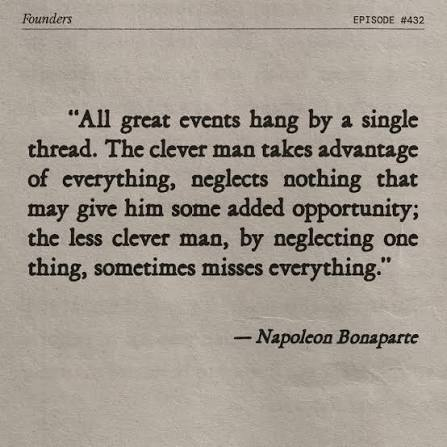

Work Till Your Eyes Burn
You’re talented, relentlessly resourceful, and have the things necessary to achieve whatever you want. Now the goal is to work hard. You’ve been inflicted with the curse of ambition: you want to achieve some extremely big things. Bigger things than anyone else ever has.
You’re going to have to work extremely hard, long hours. The greatest minds have worked every. waking. hour. No matter how smart you claim to be, do you really expect to beat the greatest our civilisation has ever seen while lazing off? Obviously not. You need to work really fucking hard. It’s a sacrifice you’re going to have to make if you really want the things you claim to want.

Eureka moments are a lie. The greatest breakthroughs in the world have come about from experience, intuition, and brilliant minds working like dogs of war.
Napoleon Bonaparte
If I always appear prepared, it is because before entering an undertaking I have meditated for long and foreseen what may occur. It is not genius which reveals to me suddenly and secretly what I should do in circumstances unexpected by others; it is thought and meditation.
Your intelligence means nothing if you’re sitting on your ass the entire day. You need to work—not only extremely long hours, but also go through things again, and again, and again. You need to approach the same problems from 20 different angles. You need to be rigorous.
In math, being rigorous means to not skip any step in the process: no hidden assumptions, no skipped steps. That is the only way you can ensure correctness. You need to be rigorous in your work as well.
